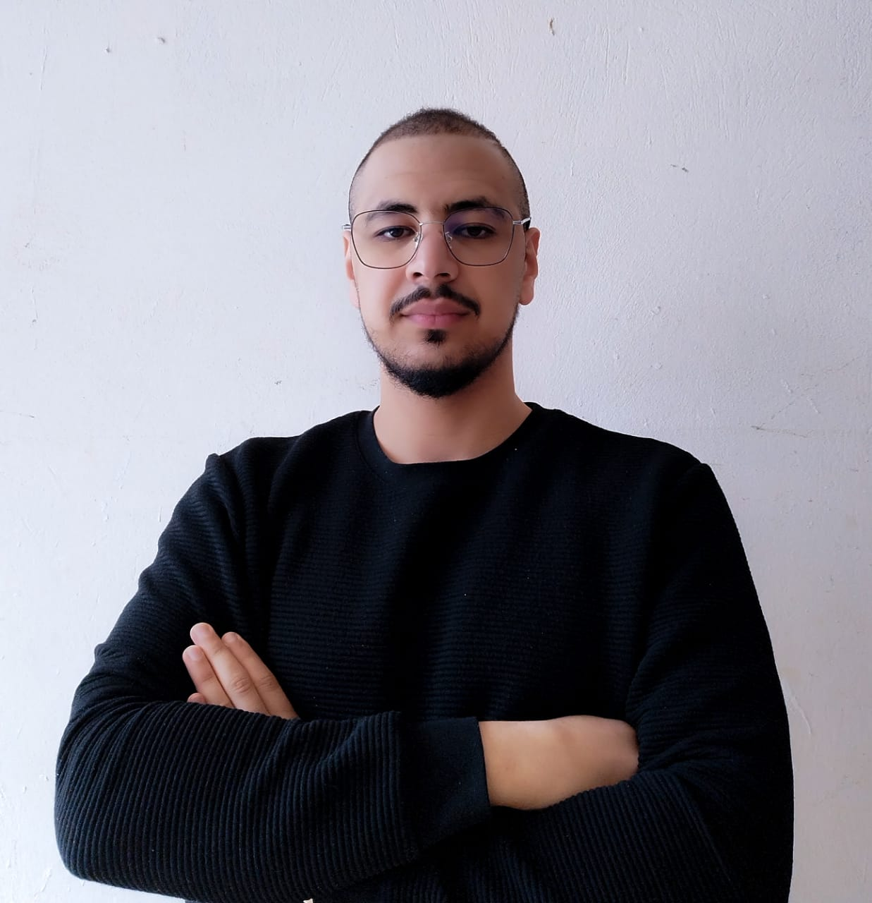

Ayoub El Boukhari

Summary
As a dedicated and passionate junior full-stack developer, I am excited to contribute my skills and knowledge to dynamic software development projects.
With a strong foundation in both front-end and back-end technologies, I am adept at building robust and user-friendly web applications.
Education
- Bachelor's Degree in Economics and Management - Moulay Ismail University (2018-2023)
- Specialized Technician in Digital Development, Web Full Stack option - Specialized Institute of Applied Technology of Management in Bab Tizimi (2021-2023)
- Computer and Network Maintenance and Support Technician - Specialized Institute of Applied Technology of Management in Bab Tizimi (2019-2021)
- Baccalaureate in Physical and Chemical Science - Omar Ibn Khatab High School (2015-2016)
Work experience
Responsible for hardware and software maintenance - Trésorerie Générale Maroc-Meknès
April 2021-mai 2021
- Proactively detecting and resolving technical issues related to hardware and software components.
- Utilizing prior experience to carefully examine problem descriptions provided by employees, including mentors and supervisors.
Full-stack Developer - MEDYOUIN Maroc-Meknès
April 2023-mai 2023
- Development of a web application called "MyMed" for managing medical practices by doctors.
- Assistance in designing and developing the database and interface for another application named "HappyFruita".
Skills
-
Frameworks agiles :
-
Python
- pymongo/pyqt5/pyautogui/tkinter
-
CSS3/HTML5
-
JavaScript
- Jquery/Json/Nodejs/Reactjs/Expressjs/Chartjs/knexjs
-
PHP
- Laravel 10/Jetstream/Breeze/Livewire
-
Base de données
-
Mobile
-
Administration des Serveur Linux et windows
- DHCP/DNS/FTP/HTTP/SSH/SAMBA
-
Cisco CCNA2
- VLAN/IPV4/IPV6/RIP/ACL/DHCP/NAT/PAT
-
Design
- Photoshop/Vegas Pro/Adobe Premiere Pro/Gitmind
Projects
-
Dofus Bot :
- Uses PyAutoGUI in Python.
- Detect visual elements.
- Perform automated movements.
- Interact with the user interface of a game.
-
Eyes :
- Uses ReactJS, KnexJS, NodeJS, and MySQL.
- Data visualization.
- Designed for Istag Bab Tzimi.
-
MyMed :
- Uses Laravel, Jetstream, Livewire, and MySQL
- A comprehensive platform for managing medical practices.
- Advanced features for administrators and doctors.
- Efficient management of appointments, patients, prescriptions, and medications.
-
MovieCatalogue :
- Uses PyQt5 and Pymongo in Python.
- Desktop application
- API to list all American movies.
- Allows users save movies they have seen and want to see in the future.
- All choices are saved in a NoSQL database.
-
I'm Cool :
- Uses React Native.
- mobile application
- Users can rate other users, which contributes to their ranking.
- Prizes are awarded to the user who finishes in first place at the end of the week.